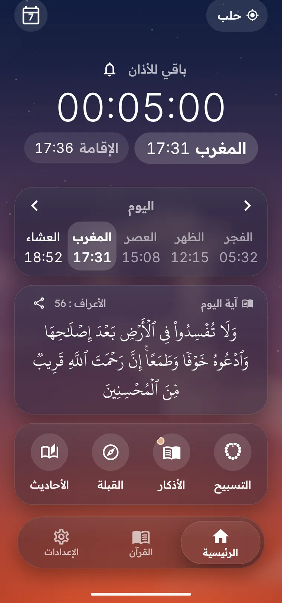

مواقيت صلاتك، بلا إنترنت
لأي مكان في العالم، بسبع عشرة طريقة حساب معتمدة وعصر شافعي أو حنفي.

- عدّ تنازلي للأذانوللإقامة بعده في كل صلاة.
- ضبط كل صلاة بالدقائققدّم أو أخّر أي صلاة لتطابق مسجدك.
- القبلةبوصلة، وعرض بالكاميرا إن أردت.
لأي مكان في العالم، بسبع عشرة طريقة حساب معتمدة وعصر شافعي أو حنفي.

٦٠٤ صفحات بخط مجمع الملك فهد، مع أحد عشر قارئًا.
يتبع وضع الصامت والاهتزاز وعدم الإزعاج.
البخاري ومسلم كاملين، ومن السنن ما صحّحه الألباني.
الشهر الهجري والميلادي معًا، وكم بقي لرمضان والعيد.

إن ظهرت رسالة من Play Protect فاضغط «التثبيت على أي حال». تظهر لأن عِمران ليس من متجر Play.